HTTP settings
Creating and configuring web servers
The HTTP and HTTPS web servers can be configured on the following dialogs opened by the web server menu.
The predefined names are: http1, http2…etc. If no HTTP access definition exists at startup, one will be created with default settings named as http1/https1. The default settings for http1/https1 are read from atserver.ini and can be overridden by command line parameters in console mode. If no HTTP/HTTPS port is defined in the .ini file, the default HTTP/HTTPS ports will be set for http1/https1. The ports of http1/https1 are read-only nodes. The http1/https1 access definitions reflects always the port settings in the .ini file.
The HTTP access definitions http2…http9, https2…https9 are project specific and can be set to arbitrary ports and parameters.
Hint
If an HTTP access definition has a port value of 0, it is disabled. So it is possible to have e.g.: HTTPS ports only (http1 definition always exists)
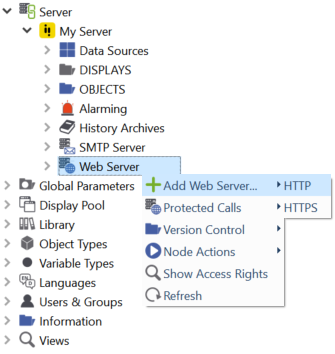
You can add and edit web servers using the context menu. The settings dialog for HTTP and HTTPS contains the common group of parameters for both web server types. The web server can be activated and deactivated using the upper check box.
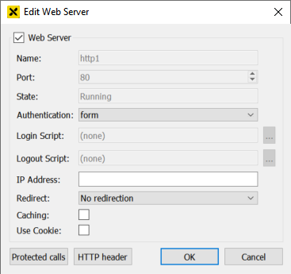
The following list contains the common attributes for all HTTP and HTTPS web servers.
- Web Server
Check box for enabling/disabling the web server.
- Name
The predefined name for web server.
- Port
Port used by the web server. It is read only for http1.
- State
Status of the web server:
Running: The web server is up and running.
Failed: The web server could not be started. Probably another port uses the given port.
Configuration Error: The web server could not be started due to missing or inproper configuration data.
Suspended: The web server is disabled.
- Authentication
The login method required from the client. The following settings are available:
Changing the login mode automatically refreshes the visualization. If you change the login mode from digest to ntlm, a browser restart is necessary to load the visualization.
The default login mode is form. In this mode, the login is handled by the login_dialog object display of atvise. When starting the visualization, no user is logged in and you have to click the login button to log in. In this mode, you can log out and log in as different user without restarting the browser. If a login shall be mandatory for this mode, set . In this case, you are automatically redirected to a login page when starting the visualization or after logging out. The actual visualization is only displayed after logging in. The login page (Library ‣ ATVISE ‣ Resources ‣ authentication.htm) can be copied to the project resources for project-specific modifications.
The login modes digest and ntlm require a user to be logged in at any time. If you start the visualization, a browser specific login dialog appears and ask for the user credentials. A logout is not possible and you must restart the browser to log in as different user.
The login mode script allows to implement an atvise-independent authentication (e.g. external authentication server) via user-defined login and logout scripts. When using this mode, the Login Script (mandatory) and Logout Script (optional) fields are enabled to select the respective script.
The settings for authentication in the .ini file are obsolete and will be ignored.
- Login script
Allows to select a login script from the Scripts folder. Only enabled if Authentication is set to script. In this case, selecting a login script is mandatory.
- Logout script
Allows to select a logout script from the Scripts folder. Only enabled if Authentication is set to script.
- IP Address
The IP address field is used to bind the web server to a specific IP address only. If empty, all known IP addresses will be bound.
- Redirect
The NodeId of another HTTP(S) access configuration where this port will be redirected. If it is empty (by default it is done by selecting "No redirection"), the port will be not redirected.
Hint
After the configuration of redirection the browser may require a refresh or emptying the cache.
- Caching
If activated, displays will be cached in the server for better performance when delivering the displays to the visualization.
Hint
Only activate caching when the configuration of all displays and access rights is completed. The cache is not updated when displays or access rights are changed afterwards. To apply changes when caching is enabled, it is necessary to clear the cache in the browser and reload the visualization.
Using NTLM
NTLM is an Active Directory based single sign-on (SSO) scheme. To use atvise server with NTLM authentication, the platform must support the Active Directory Service Interface. There is no need to create users for SSO.
The (automatically) logged in user's visualization rights are the sum of the following rights:
The rights of all atvise groups matching the group names of the user in Active Directory.
The rights of all atvise groups explicitly assigned to a user with format DOMAIN\username.
Hint
In atvise versions < 3.6, the visualization rights of domain users created in atvise (see step 2) were only used if no matching groups were found (step 1). Starting with atvise 3.6, the sum of all rights is used. Therefore, an NTLM user may have more visualization rights in atvise 3.6 than in older versions.
Access control
NTLM users can log in to the atvise visualization with rights of the AuthenticatedUser group by default. To enable project administrator rights, the option Set anonymous and NTLM users as project administrator must be set. However, if you create a domain user (DOMAIN\username) in atvise, the defined access rights will override these settings for this user.
Browser support
Not all browsers support NTLM. Browsers supporting NTLM have different behavior:
- Chrome, Edge
To enable the automatic logon for Chrome and Edge, go to Control Panel > Internet Options > Security. There are two configuration options:
Select the Internet zone and click Custom level… to define the security level for the zone. Select User Authentication > Logon > Automatic logon with current user name and password.
Select the Local intranet or Trusted sites zone, click Sites and add the website to the respective zone.
- Firefox ESR
The browser must be configured in order to allow Single Sign-On (SSO): In the browser address list enter:
about:config. Search for network.automatic-ntlm-auth.trusted-uris. Enter the name of the trusted server in a comma separated list. E.g:http://servername.dom.org, https://servername.dom.org. In redundancy mode all addresses must be added (e.g. primary.mydomain.com, secondary.mydomain.com).
Login / Logout script
If login mode script is selected, user-defined scripts can be defined for login (mandatory) and logout (optional). The scripts must be created under Webserver ‣ Scripts (AGENT.WEBACCESS.Scripts).
Hint
Please ensure that the Scripts folder is secured by sufficient access control rights.
A login or logout script can only be called by scripts of the same type, e.g. a login script can only be called by another login script. Other scripts cannot call or execute login or logout scripts. However, a login or logout script can call other scripts from the library.
If a login script crashes or throws an exception, the login is not successful. A logout script will log out the user, regardless of any script crashes or exceptions.
Using two-factor authentication with this login option is only possible if the respective user also exists in atvise. Otherwise, the two-factor authentication is ignored.
These scripts are handled like system-triggered scripts, i.e. the calling session is the internal root session (refer to Access control > Notes and information > Scripting > Executing scripts for further information). The script priority cannot be changed and is set to 11 by default.
Login script
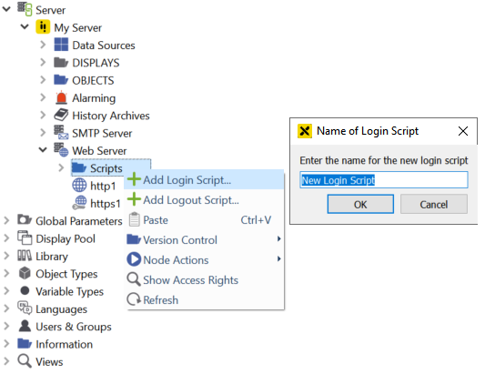
Click Add Login Script… in the context menu of the Scripts folder and define a name for the script. A login script with the following unchangeable default parameters is created:
username (String) – The username which is passed to the script when logging in.
password (String) – The password which is passed to the script as plain text when logging in
request (http.request) – All post values of the login passed to the script, including user and password
ip (http.ip) – IP address of the client which is passed when logging in
The login script returns the following data (corresponding to the user settings under SYSTEM ‣ SECURITY ‣ USERS ‣ <user>, see also user settings for a detailed description) to the WebAccess module. If no value is given for one of the fields, the default value is used. Any other field will be ignored. For a better understanding of the return structure, refer to the example scripts under SYSTEM ‣ LIBRARY ‣ ATVISE ‣ SERVERSCRIPTS ‣ AuthScripts.
success (Boolean, default: false) – Login success, if true, all return values are passed to the script and the information defined for authcontext is stored for the login session.
usermode (Int, default: 1) – Defines the behavior, if the logged in user also exists in atvise. Currently only usermode = 1 (default) can be used. In this case, all fields but groups are overridden by the atvise user settings. This only applies to fields of the atvise user that are not empty. groups are merged with the groups defined for the atvise user.
userfallback (Boolean, default: false) – Defines if the fallback login mechanism shall be enabled.
false – No fallback mechanism
true – After an unsuccessful login, it is checked whether the given user exists in atvise. If it exists, a form login is automatically attempted.
groups (Array of strings, default: []) – Groups assigned to the user, e.g. ["groupA","groupB"]
description (String, default: "") – Description of the user
preferredlanguage (String, default: "") – Preferred language of the user, e.g. "en"
name (String, default: "") – User name
defaultdisplay (String, default: "") – Default display defined for the user, e.g. "AGENT.DISPLAYS.myDisplay1"
contentdisplay (String, default: "") – Main display defined for the user, e.g. "AGENT.DISPLAYS.myDisplay2"
loginopcua (Boolean, default: false, cannot be changed currently) – Defines if the user is allowed to log in via OPC UA
loginwebmi (Boolean, default: true, cannot be changed currently) – Defines if the user is allowed to log in to the visualization
superuser (Boolean, default: false) – User is project administrator
allownodebrowser (Boolean, default: false, cannot be changed currently) – Defines if the user is allowed to open the node browser tab
authcontext (Object) – Context specific information for the logout process, can be arbitrarily defined by the script. Example content: {"status": 0, "user": user, "password": password, "access_token": "", "token_type": "", "scope": ""}
clientreturn (String or JSON.stringify object, default: "") – Customizable additional information (default: ""). Can be queried via "additionalInfo" in the visualization (see webMI.data.login).
authresult (Object) – Information regarding the login process.
expiry (Number) – The number of remaining days that the password will be valid. 1 means that it is the last day the password can be used. A number <= 0 means that the password has already expired n days ago and logging in with this password is not possible anymore.
tries (Number) – The number of remaining login attempts before the user will be locked.
locktime (Number) – The remaining time (in milliseconds) the user is locked. -1 means that the user is permanently locked and must be unlocked by a project administrator.
delay (Number) – The remaining delay time (in milliseconds) until the next login attempt is possible.
Hint
If the same user is logging in again, the user information is updated by the new login. Thus, the rights of already logged in users are also updated.
Logout-Script
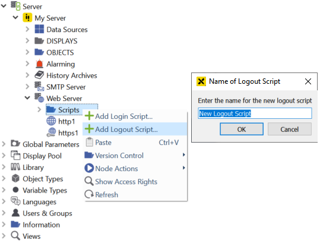
Click Add Logout Script… in the context menu of the Scripts folder and define a name for the script. A logout script with the following unchangeable default parameter is created:
authContext (String) – Content of authcontext from the login request.
The logout script returns the following data to the WebAccess module. If no value is given for one of the fields, the default value is used. Any other field will be ignored.
success (Boolean) – Logout success (default: true). The session's login information is deleted in any case. If false, either a WebAccess error or script error is written to the atvise log file in addition.
clientreturn (String or JSON.stringify object) – Customizable additional information (default: "")
Protected calls
webMI callable scripts and some internal functions can be protected. They will be referred further as functions. The protected calls are stored in a list. The list contains the name of the protected functions and the corresponding rights. If a function is not listed in the protected calls then it is not protected. If a function is in the list of protected calls, it will be executed only if the logged in user has the corresponding right.
To enabe/disable the protected calls right-click on Web Server and select . Protected calls are enabled, if the Item 'Enabled' is checked.
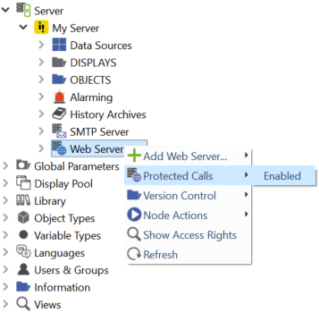
To protect an arbitrary function push the Protected Calls button or right-click on the web server and select from the context menu.
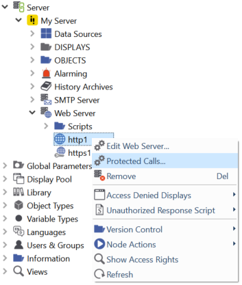
The following dialog appears:
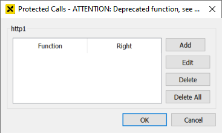
To protect a function press the Add button. The following dialog appears:
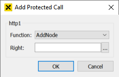
Select the name of the function from the list of available functions:
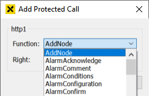
The corresponding right must be selected from the list of available rights. Press … next to 'Right:':
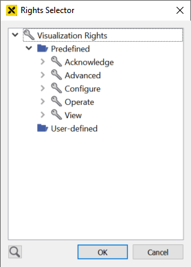
Select the right that protects the function. If the logged in user does not have the selected right, then the function will be not executed if called by a webMI call.
The list of protected calls can be further modified in the 'Protected Calls' dialog. New functions can be added or existing functions can be modified or deleted from the list.
Hint
The list of the protected calls is valid only for the corresponding HTTP(S) server.
Modifying the HTTP header
You can modify the HTTP header that is sent to the browser by specifying arbitrary HTTP header fields. To edit the HTTP header fields, click the HTTP header button on the settings dialog. The following dialog appears:
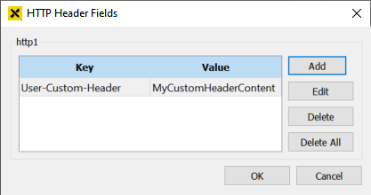
The dialog shows the currently specified header fields and allows to add, edit and remove fields.
Hint
The HTTP header fields will be merged into the standard header fields of the atvise web server. The header fields in this dialog have precedence over the standard header fields. This allows to overwrite a standard header field with a custom value by specifying the name of the respective header field as key in this dialog.
Access Denied Displays
The displays that are shown when access to a display is denied. The default displays (access_denied_background and access_denied_symbol) can be edited for each web server.
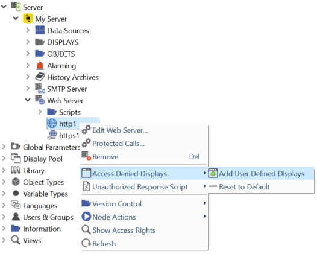
Click Access Denied Displays > Add User Defined Displays in the context menu of the respective web server. The two default displays are added and can be edited as required. To change the user-defined symbol, proceed as follows:
Create an object display with a size of 60x60 pixels.
Add the object display to the access_denied_symbol display.
Hint
If an old project is upgraded, the displays access_denied_symbol and access_denied_background are empty. You have to either upgrade the resources (see atvise maintenance tool - update resources) or manually create the displays.
Using HTTPS
If you want to use HTTPS to secure your communication, a certificate in PEM format that also contains the private key is required. If the certificate is issued by an certificate authority, the certficiate must contain the entire certificate chain. The certificate must be located in the "own" directory of the certificate store (Default: <atvise_directory>\PKI\atserver\https). See chapter Application Instance Certificate for a description of fields required for HTTPS certificates. Self-signed certificates can be created using the Certificate manager in atvise.
Hint
Self-signed certificates are supported, however, certificates issued by trusted certificate authorities shall be used if possible.
Requirements for certificates may vary depending on the operating system. Instructions on using or installing self-signed certificates on the respective operating system (e.g. iOS) can be found on the Internet.
Edit the HTTPS web server and select the certificate file:
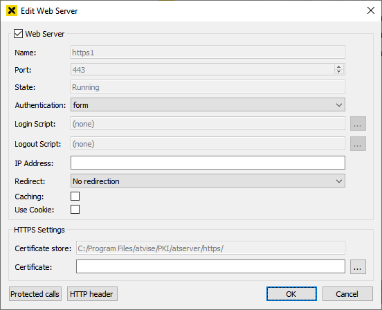
The following list contains the attributes related to HTTPS web server only.
- Certificate Store
The certificate store for managing HTTPS certificates.
- Certificate
The certificate that shall be used for communication with the web server. Clicking … opens the certificate selection dialog:
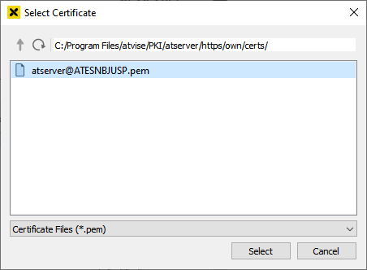